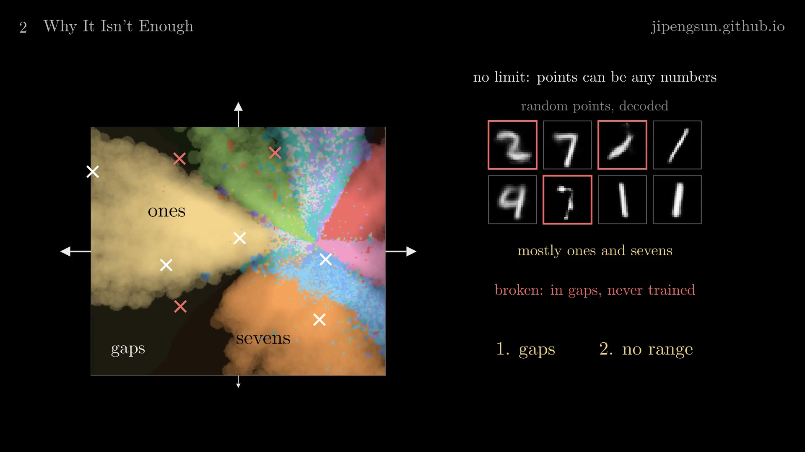
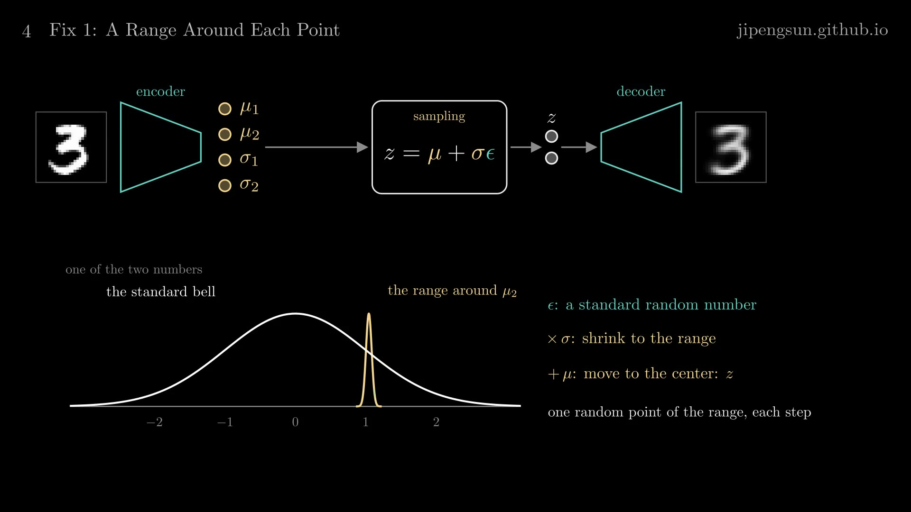
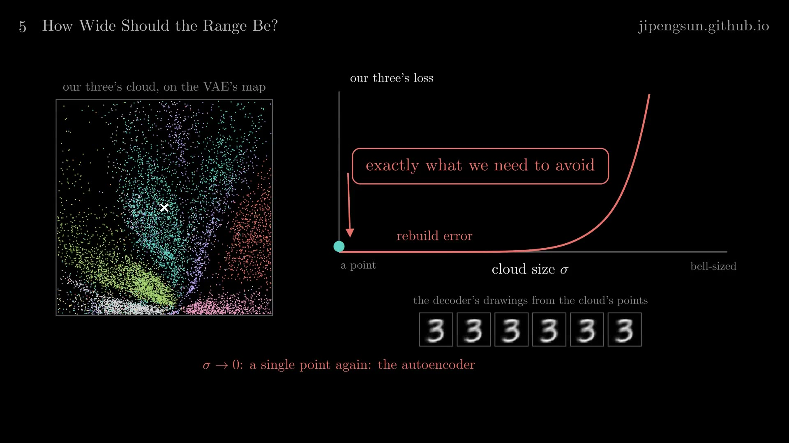
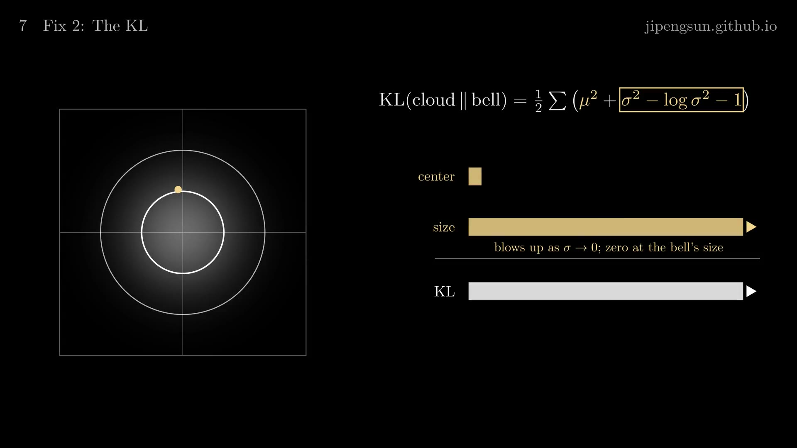
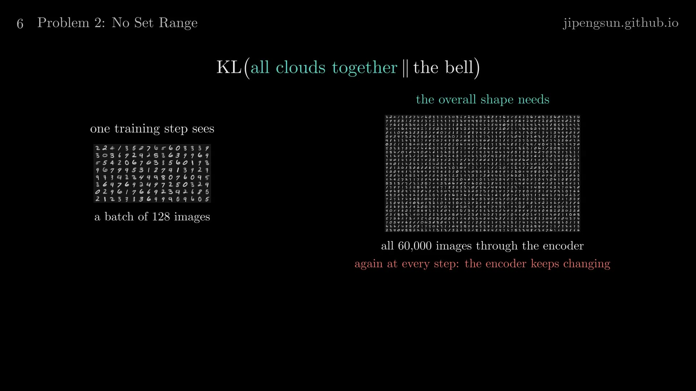
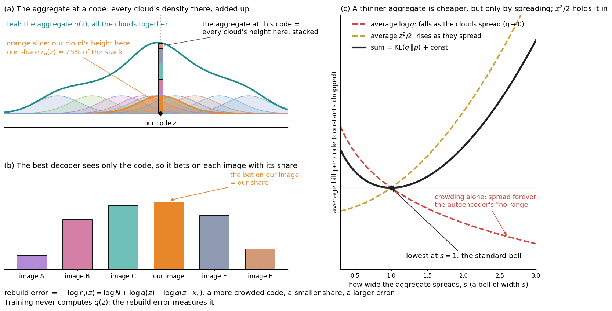
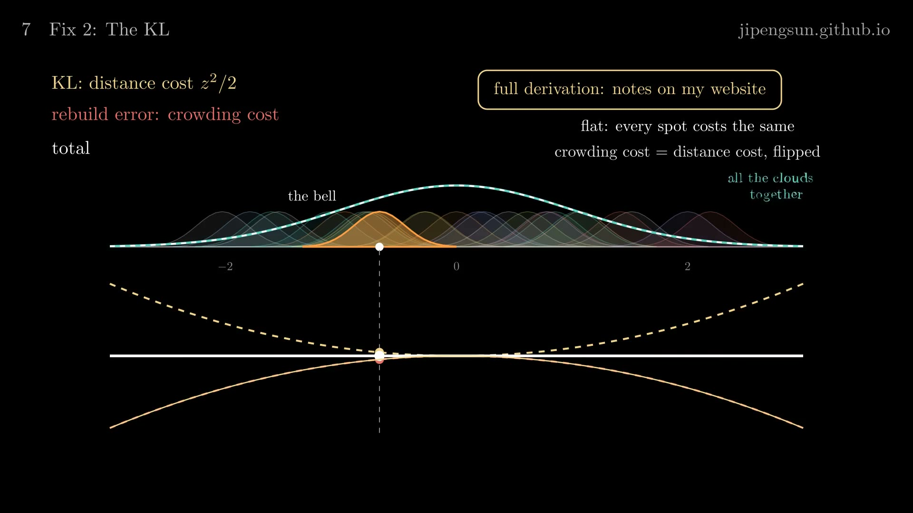
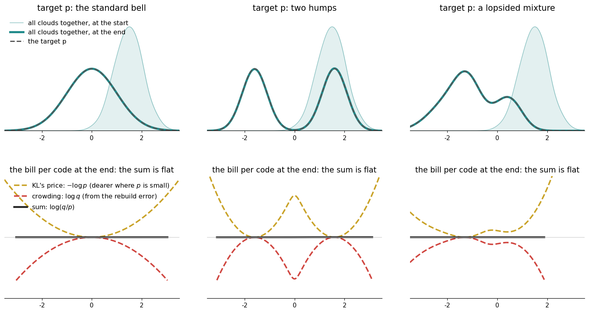
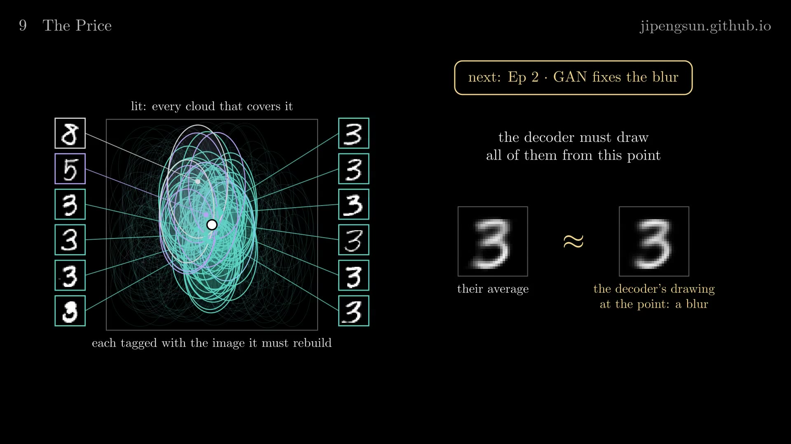

Variational Autoencoder (VAE)
A variational autoencoder, or VAE, is a generative model: after training, it turns a few random numbers into a new sample that looks like its training data, here a handwritten digit that nobody wrote. It is also a working part of larger systems. Stable Diffusion's VAE compresses a 512 × 512 image into a 64 × 64 × 4 grid, 16,384 numbers, runs its diffusion there, and decodes the result back to pixels.
This note builds the VAE from the plain autoencoder it grows out of, one concrete training step at a time, with a model small enough to draw: every code has two numbers. Every number quoted was computed from our own models, trained on MNIST (60,000 training digits of 28 × 28 pixels) with fixed seeds.
Video: Understand VAE from First Principles, a six-minute visual explainer of this note, from the autoencoder's gaps to a cloud around each code, the KL that pulls all the clouds together into the standard bell, and the blur that comes with it.
The autoencoder: a codebook
An autoencoder is trained on what looks like a pointless task: given an image, give back the very same image. The point is the middle. The network narrows there to a few numbers, so it has to compress the image into those numbers and rebuild it from them alone. And if any numbers put into the middle came out as a sensible image, the second half alone would be a generator; that hope is what the rest of this note works toward.
An autoencoder has two networks. The encoder \(f\) maps an image \(x\), its 784 pixel values in \([0, 1]\), to a short code \(z = f(x)\); the decoder \(g\) maps the code back to an image \(\hat x = g(z)\). Training adjusts both networks so that \(\hat x\) matches \(x\) pixel by pixel. Our rebuild error is the binary cross-entropy summed over the pixels,
\[\ell(x, \hat x) = -\sum_{i=1}^{784} \Big[ x_i \log \hat x_i + (1 - x_i) \log (1 - \hat x_i) \Big],\]
which, for each pixel \(i\), is smallest when the drawing's value \(\hat x_i\) equals the original's \(x_i\). Our networks are small multilayer perceptrons, 784 → 512 → 256 → 2 for the encoder and the mirror image for the decoder, trained with Adam on batches of 128 digits.
Real autoencoders keep hundreds or thousands of numbers per code. Ours keeps two, so that every code is a point on a plane. Together, the codes of all the training digits form a codebook: one entry per digit, from which the decoder can rebuild it. Drawn on the plane, the codebook is a map. Our running example, test digit 1134, a three, gets the code \((-0.26, 1.66)\).
The map organizes itself. At the start of training all the codes sit in one clump, and the decoder draws the same blur for every digit. The decoder is a smooth function, so codes that are close decode alike; the only way to rebuild a one and a zero differently is to move their codes apart. After training, the map is sorted into neighborhoods by shape, although no label was ever used.
Random codes on the autoencoder's map
To generate, we would pick a code and decode it. Pick codes uniformly from the box between the 1st and 99th percentiles of the codes (about −23 to 7 by −14 to 12), and 66% of 2,000 such codes decode to a one or a seven, judged by a digit classifier. The map is lopsided: by nearest training code, ones own 40% of the box and sevens 23%, and the other eight digits share the rest. Some random codes also decode to broken shapes: they fall in empty stretches, with no training code within 0.75, where the decoder was never trained.

Figure 1. Random codes on the autoencoder's map, decoded: mostly ones and sevens, and broken shapes where a code falls in a gap between the training codes (red). Nothing bounds the codes either: they can be any numbers.
Nothing in the loss asks for better. It only asks that each digit have an exact entry from which it can be rebuilt; nothing trains the space between the entries, and nothing decides where they sit. The VAE adds one change for each.
Change 1: a random code
The VAE's encoder outputs two vectors instead of one: a center \(\mu(x)\) and a spread \(\sigma(x)\), one of each per coordinate. (In practice it outputs \(\log \sigma^2\), so that \(\sigma\) is positive by construction.) In network terms, where the autoencoder's encoder ends in two outputs, the VAE's ends in four, \(\mu_1, \mu_2, \sigma_1, \sigma_2\), and a sampling step sits between it and the decoder, whose first layer still takes two numbers. Instead of passing \(\mu\) to the decoder, each training step draws a random code
\[z = \mu(x) + \sigma(x) \odot \epsilon, \qquad \epsilon \sim \mathcal N(0, I),\]
where \(\epsilon\) is a vector of independent draws from the standard bell curve and \(\odot\) multiplies component by component. The code of \(x\) is then no longer a point but a distribution, \(q(z \mid x) = \mathcal N\big(\mu(x), \operatorname{diag} \sigma(x)^2\big)\): a small bell curve, a cloud, around \(\mu\). Writing the draw this way, the reparameterization trick, keeps the randomness in \(\epsilon\), so the loss can be differentiated with respect to \(\mu\) and \(\sigma\) and the encoder can be trained by backpropagation.

Figure 2. One training step of the VAE (top): the encoder gives \(\mu\) and \(\sigma\), a standard random number \(\epsilon\) is shrunk by \(\sigma\) and moved by \(\mu\), and the decoder draws from \(z = \mu + \sigma \odot \epsilon\). Along one of the two numbers (bottom), the cloud is a narrow bell around \(\mu_2\), next to the standard bell.
One training step on our three, with the trained VAE: the encoder gives \(\mu = (-0.112, 1.043)\) and \(\sigma = (0.024, 0.041)\); the step draws \(\epsilon = (0.74, 1.95)\), so \(z = (-0.094, 1.122)\); the decoder's drawing from \(z\) has rebuild error 141 (from \(\mu\) itself it would be 133). The next step draws a new \(\epsilon\), so over training the decoder rebuilds the three from the whole cloud around \(\mu\), not from one exact point: the space between codes gets trained.
Noise alone does not last, because it only makes rebuilding harder. In the VAE's own space, widen the three's cloud to \(\sigma = 0.45\) in both coordinates: its draws land among fives, twos and zeros, only 59% of them still decode as threes, and the rebuild error averaged over draws rises to 217, against 133 at \(\sigma = 0\) and 134.5 at the real \(\sigma\). Since \(\sigma\) is the encoder's output, gradient descent on the rebuild error alone shrinks it. A run with clouds and no other change did exactly that: the median \(\sigma\) fell from 0.98 to 0.00002, about 50,000-fold, while the map spread out about 370 times wider. The clouds became points again, an autoencoder with all its gaps, which is exactly what the VAE has to avoid.

Figure 3. Rebuilding alone (right: our three's rebuild error against the cloud's size \(\sigma\)) pushes \(\sigma\) to 0, and the cloud is a single point again: an autoencoder.
Change 2: the KL term
The VAE adds a second term to the loss: how far each cloud is from one fixed standard bell curve, the prior \(p(z) = \mathcal N(0, I)\). Comparing each cloud with the bell is enough because of a rule derived below: pull each cloud toward a target distribution with the KL, and all the clouds together take the target's shape; to make the whole codebook a standard bell, the VAE pulls every cloud toward one. The distance is the Kullback–Leibler divergence,
\[\mathrm{KL}\big(q(z \mid x) \,\|\, p(z)\big) = \int q(z \mid x) \log \frac{q(z \mid x)}{p(z)} \, dz,\]
which is zero when the two distributions are the same and positive otherwise. Because both are Gaussian, the integral has a closed form. With \(q = \mathcal N(\mu, \operatorname{diag} \sigma^2)\) and \(p = \mathcal N(0, I)\) in \(d\) dimensions,
\[\mathrm{KL} = \frac{1}{2} \sum_{j=1}^{d} \Big( \mu_j^2 + \sigma_j^2 - \log \sigma_j^2 - 1 \Big).\]
To see it, write \(\log q - \log p = \sum_j \big[ -\log \sigma_j - (z_j - \mu_j)^2 / (2 \sigma_j^2) + z_j^2 / 2 \big]\) and take the expectation under \(q\), where \(\mathbb E[(z_j - \mu_j)^2] = \sigma_j^2\) and \(\mathbb E[z_j^2] = \mu_j^2 + \sigma_j^2\). So the distance from the prior needs nothing but the encoder's two outputs. It is computed exactly, for each training image on its own, from that image's \(\mu\) and \(\sigma\): no sampling and no statistics over the batch are involved, and the loss averages these per-image values over the batch. Other models do compare a whole batch of sampled codes with the prior: adversarial autoencoders train a discriminator for it, and Wasserstein and MMD autoencoders use a sample-based distance. The VAE needs neither, because both distributions it compares are Gaussians with known parameters. For our three, the first coordinate gives \(\tfrac12(0.01 + 0.0006 + 7.43 - 1) = 3.22\) and the second \(\tfrac12(1.09 + 0.0016 + 6.41 - 1) = 3.25\), so \(\mathrm{KL} = 6.47\): 5.92 of it from the small spread (\(-\log \sigma^2\)) and 0.55 from the center (\(\mu^2\)).
The two parts do different jobs. The spread part, \(\sigma^2 - \log \sigma^2 - 1\), is zero at \(\sigma = 1\) and grows without bound as \(\sigma \to 0\), because \(-\log \sigma^2 \to \infty\); so the clouds cannot collapse to points. Rebuilding pushes \(\sigma\) down, the KL pushes back, and \(\sigma\) settles in between, about 0.03 in our model. The center part, \(\mu^2\), grows as a cloud's center moves away from 0, so the codes gather inside the standard bell curve, which is exactly where codes are drawn when generating.

Figure 4. The KL of one cloud against the standard bell, term by term: the center part grows as \(\mu\) leaves 0, and the size part, \(\sigma^2 - \log \sigma^2 - 1\), grows without bound as \(\sigma \to 0\) and is zero at the bell's size.
The loss
For one training digit, the loss is the rebuild error plus the KL,
\[\mathcal L(x) = \mathbb E_{\epsilon} \Big[ \ell\big(x, g(\mu + \sigma \odot \epsilon)\big) \Big] + \mathrm{KL}\big(q(z \mid x) \,\|\, p(z)\big),\]
with the expectation estimated by one draw of \(\epsilon\) per step; for our three's step above, \(141 + 6.5\). Training minimizes the average of \(\mathcal L\) over the 60,000 digits. Our run started from the trained autoencoder and raised the KL's weight from 0 to 1 over the first 6 of 40 epochs (a KL warm-up); at the end, the average loss was 133.2, rebuild error 125.8 plus KL 7.4.
Following the codes of 600 test digits through that run, the autoencoder's map slides into one round patch inside the bell curve, where the clouds overlap. A code drawn from \(\mathcal N(0, I)\) lies within two spreads of 28 training clouds (the median over 3,000 draws), and only 1.3% of draws lie within none: wherever you pick, the decoder has practiced.
Why the clouds together take the prior's shape
The KL is charged to each cloud on its own, yet no single cloud becomes the prior. What the prior shapes is the codebook as a whole, the aggregate
\[q(z) = \frac{1}{N} \sum_{n=1}^{N} q(z \mid x_n),\]
the average of the clouds of all \(N\) training images: the density of the codes the decoder meets in training. Charging the KL of the aggregate itself would be costly: its density at any code depends on every training image's cloud, so each step would have to run all \(N\) images through the encoder, which changes at every step, while a step sees only a batch of 128.

Figure 5. Why the aggregate is not charged directly: its shape depends on every image's cloud, so each step would need all 60,000 training images through the encoder, which keeps changing, while one training step sees a batch of 128.
A rule connects the two. Pull each cloud toward a target distribution \(p\) with the KL, let the decoder rebuild as well as it possibly can, and the aggregate takes the shape of \(p\), whatever shape \(p\) has. The standard bell is simply the target the VAE picks, because codes are easy to draw from it and its KL against a Gaussian cloud has the closed form above. The rest of this section proves the rule.
Treat the training set as \(N\) images, each equally likely, and read the rebuild error as \(-\log d(x_n \mid z)\), where \(d(x_n \mid z)\) is the probability the decoder gives to image \(x_n\) when it sees the code \(z\); its probabilities over the training images add up to at most 1. (For binary pixels, the binary cross-entropy above is exactly such a negative log-probability.) The KL of a cloud is the average, over that cloud, of \(\log q(z \mid x_n) - \log p(z)\). So the loss averaged over the training set, the quantity training minimizes, can be written as a bill for every code \(z\) of every cloud:
\[\bar{\mathcal L} = \frac{1}{N} \sum_{n=1}^{N} \mathbb E_{z \sim q(z \mid x_n)} \Big[ -\log d(x_n \mid z) + \log q(z \mid x_n) - \log p(z) \Big].\]
At a code \(z\), several clouds overlap. Image \(n\)'s share of the aggregate there,
\[r_n(z) = \frac{q(z \mid x_n)}{N\, q(z)}, \qquad \sum_{n=1}^{N} r_n(z) = 1,\]
is the probability that \(z\) came from image \(n\), if all you know is \(z\). Split the rebuild term as \(-\log d = -\log r_n + \log (r_n / d)\), and use \(\frac{1}{N}\, q(z \mid x_n) = q(z)\, r_n(z)\) to turn an average over every cloud into an average over the aggregate. The loss becomes
\[\begin{aligned} \bar{\mathcal L} = {} & \frac{1}{N} \sum_{n=1}^{N} \mathbb E_{q(z \mid x_n)} \Big[ -\log r_n(z) + \log q(z \mid x_n) - \log p(z) \Big] \\ & + \mathbb E_{z \sim q} \Big[ \mathrm{KL}\big( r(\cdot \mid z) \,\|\, d(\cdot \mid z) \big) \Big]. \end{aligned}\]
The second term compares the decoder's answer at \(z\) with the shares, the best answer there is: it is zero when the decoder bets on each image with exactly its share, and positive otherwise. In the first term, \(-\log r_n(z) = \log N + \log q(z) - \log q(z \mid x_n)\), so each cloud's own density cancels:
\[-\log r_n(z) + \log q(z \mid x_n) - \log p(z) = \log N + \log \frac{q(z)}{p(z)}.\]
What is left depends on the code alone, not on the cloud it came from, and its average over all the clouds, which is its average over the aggregate, is \(\log N + \mathrm{KL}\big(q(z) \,\Vert\, p(z)\big)\). So, for any encoder and any decoder,
\[\bar{\mathcal L} = \log N + \mathrm{KL}\big(q(z) \,\|\, p(z)\big) + \mathbb E_{z \sim q} \Big[ \mathrm{KL}\big( r(\cdot \mid z) \,\|\, d(\cdot \mid z) \big) \Big].\]
The first term is fixed by the data. The other two are never negative, so the loss reaches its floor, \(\log N\), exactly when the decoder bets by shares and the aggregate equals the prior. Nothing in the argument used the shape of \(p\).

Figure 6. (a) The aggregate at a code is every cloud's density there, stacked; our cloud's slice is its share \(r_n(z)\). (b) The best decoder, seeing only the code, bets on each image with its share, so its rebuild error is \(-\log r_n(z)\). (c) Treating the aggregate as a bell of width \(s\): the crowding part keeps falling as it spreads, the distance part rises, and their sum, \(\mathrm{KL}(q \,\Vert\, p)\) up to a constant, is lowest at \(s = 1\).
The same bill shows how training gets there. For one code \(z\) of one cloud, with the best decoder, the KL charges \(\log q(z \mid x_n) - \log p(z)\) and the rebuild error charges \(\log N + \log q(z) - \log q(z \mid x_n)\). With \(p = \mathcal N(0, 1)\) in one dimension, \(-\log p(z) = z^2/2 + \tfrac12 \log 2\pi\): the KL charges for distance from the center, and the rebuild error for crowding, the log of the aggregate at \(z\), because where clouds pile up the decoder cannot tell which image a code came from. Each cloud lowers its loss by moving toward cheaper codes, out of crowds but not too far out, and the total stops changing only when every code costs the same: when \(\log q(z)\) falls exactly as fast as \(z^2/2\) grows, that is, \(q(z) \propto e^{-z^2/2}\), the standard bell. In a one-number simulation, 1,500 clouds of width 0.22, started bunched on one side and each moved downhill on \(\log q(z) - \log p(z)\), end with the aggregate within \(\mathrm{KL}(q \,\Vert\, p) < 0.001\) of the target for the standard bell, for two humps at \(\pm 1.6\) and for a lopsided four-part mixture. The two humps take about four times as many steps, because clouds have to cross the empty valley between them.

Figure 7. The bill per code along one number, with the best decoder: the KL's distance cost \(z^2/2\) (yellow) and the crowding cost (red). Once the clouds have slid until the total (white) is flat, the crowding cost is the distance cost flipped, and all the clouds together (teal) are the standard bell (dashed).

Figure 8. The one-number simulation: the same 1,500 clouds pulled toward three targets \(p\). Top: the target (dashed), all the clouds together at the start (light) and at the end (teal). Bottom: the bill per code at the end, \(-\log p\), \(\log q\) and their sum \(\log(q/p)\), flat.
The split of the KL term into information and shape fits the same picture. Averaged over the data, the KL term is \(\frac{1}{N} \sum_n \mathrm{KL}\big(q(z \mid x_n) \,\Vert\, p(z)\big) = I(x; z) + \mathrm{KL}\big(q(z) \,\Vert\, p(z)\big)\), where \(I(x; z)\) is the mutual information between an image and its code, and with the best decoder the rebuild error is \(\log N - I(x; z)\): the information the KL charges for is paid back in full by better rebuilding. A real decoder cannot bet by shares. It draws one picture per code, so where the clouds of different images overlap its gap from the shares stays positive, and the cheapest way to shrink the gap is to keep different images' clouds apart. That is why, in our model, the aggregate fills the prior's region at about its size, with 80% of its mass within two spreads of the center against 86% for the prior, though not its exact shape: it is a dense hub with spokes along the digit clusters. That is what generation needs: codes drawn from the prior land where the decoder has practiced. In the other direction, a decoder powerful enough to bet by shares even when every cloud is the prior itself makes the code worthless: all the clouds can then collapse onto the prior and carry nothing about their images, the failure known as posterior collapse.
The rule has conditions. The decoder must come close to betting by shares, and the clouds must be able to combine into \(p\); in particular, no cloud may put mass where \(p\) is zero, or its KL is infinite, so a uniform prior on a box would need box-shaped clouds rather than Gaussian ones. And the rule says where the loss is lowest, not how fast training gets there.
Generating
After training, the encoder is dropped. Draw \(z \sim \mathcal N(0, I)\) and decode it, one network pass per digit. Decoding a grid across the patch shows every digit with its share, one shape melting into the next; the autoencoder's map, decoded the same way, is mostly ones and sevens.
The loss has a second reading. Its negative, \(-\mathcal L(x)\), is the evidence lower bound (ELBO), a lower bound on \(\log p(x)\), the log-probability the model gives to a real digit; the VAE was first derived as a way to maximize that bound. The derivation is in the note on the ELBO.
Why VAE digits are blurry
VAE samples are soft: by our measure, the mean squared change between neighboring pixels, their strokes are 0.31 as sharp as real digits'. The cause is the same overlap that makes the codebook work. At our three's code, the training clouds of about 58 digits overlap (an effective count from their weights), 91% of the weight on threes. In training, the decoder is asked to rebuild each of them from codes there, but it can give only one picture per code. For a per-pixel loss the single best picture is the weighted average of the targets: for binary cross-entropy, as for squared error, \(\sum_k w_k\, \ell(x_k, \hat x)\) is smallest at \(\hat x = \sum_k w_k x_k / \sum_k w_k\).

Figure 9. Zoomed in on one code: every training cloud that covers it, a dozen tagged with the image each must rebuild. A per-pixel decoder can give one picture there, and the best one is their weighted average, which matches the decoder's actual drawing at that code: a blur.
One pixel shows it. At pixel (8, 17), the eight threes weighing most are ink in four and blank in four; the decoder answers 0.61, and the weighted average of every digit there is 0.59. Every pixel at once gives a blurred three, and the decoder's output is 5.6 times closer to it than to any single three. A GAN, the next method in this series, replaces the pixel grade with a critic that judges whether a picture looks real.
Summary
An autoencoder learns an exact codebook, lopsided and full of gaps. A VAE gives every code a spread, \(z = \mu + \sigma \odot \epsilon\), so the decoder practices on the space between codes, and charges every cloud its KL distance from one standard bell curve, which keeps the clouds from collapsing and, all together, shapes them into that bell, where we sample. The result is a codebook with no gaps, in which any code you pick decodes to a digit in one pass: efficient, but a little blurry.